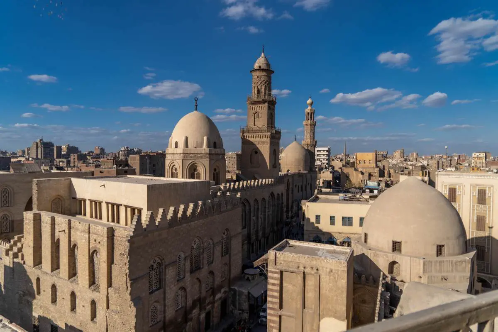
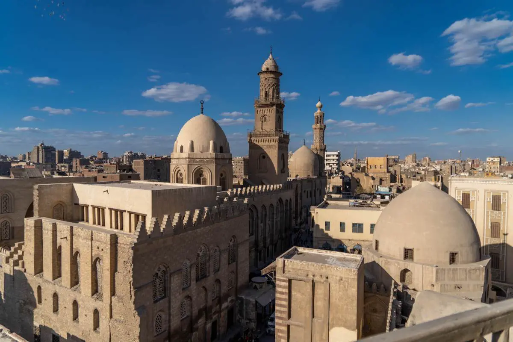
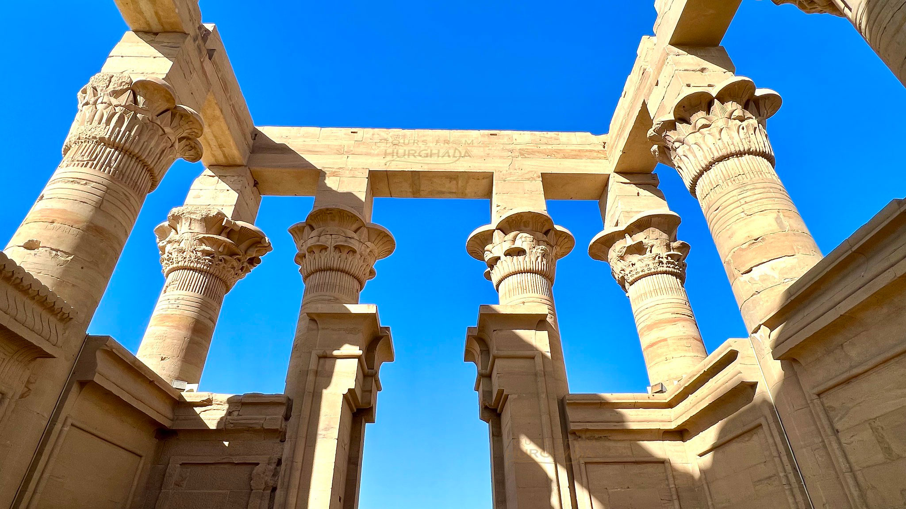
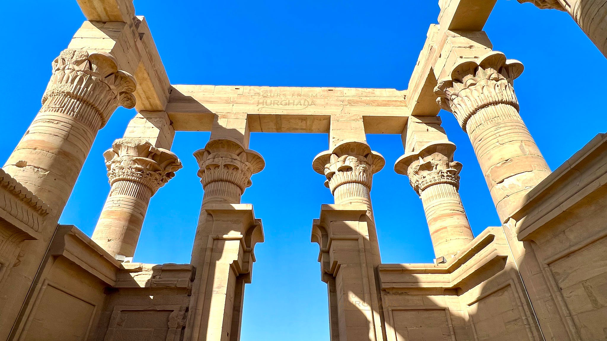

A Rich Tapestry of History and Tradition
Egypt, a land steeped in ancient history, offers a captivating blend of cultural experiences. From the majestic pyramids to the vibrant bazaars, there's something for everyone to discover.

- Explore the iconic pyramids of Giza and the Sphinx.
- Visit the Valley of the Kings and uncover the tombs of the pharaohs.
- Cruise down the Nile River and witness the breathtaking scenery.
A Culinary Journey Through Time
Egypt’s capital city is where most travellers first arrive. For many, Cairo can seem like an initially bewildering experience; an intoxicating, bustling city, with narrow sandy streets and bazaars filled to bursting point with antiques and spices. For these reasons it’s a good idea to know where to go when you first arrive in Cairo, Egypt. Here are our favourite Cairo tourist attractions:
- Giza: Of course, no Egypt trip would be complete without a visit to the pyramids of Giza. Located just outside the city, these iconic landmarks are situated on the stark, windswept desert and cannot be missed!
- Egyptian Museum: The Egyptian museum is widely considered to be one of the finest Cairo tourist attractions. This remarkable building houses the most extensive collection of ancient Egyptian artefacts in the world, including Tutankhamen’s mask.
- Mohamed Ali Mosque: C airo boasts a number of impressive mosques, and the Mohamed Ali Mosque is perhaps the finest example. Whilst on a Egypt tour, make sure not to miss this religious building, to take in the classic Islamic architecture and the evocative ambiance.
- Old City: Cairo, Egypt, is often thought to be a solely Muslim country. However, it also has a fascinating Christian past, which can be viewed in the Coptic region of the city, particularly in the dusty, dimly lit interior of the Coptic Church.


 

 
